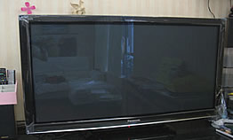
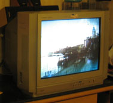
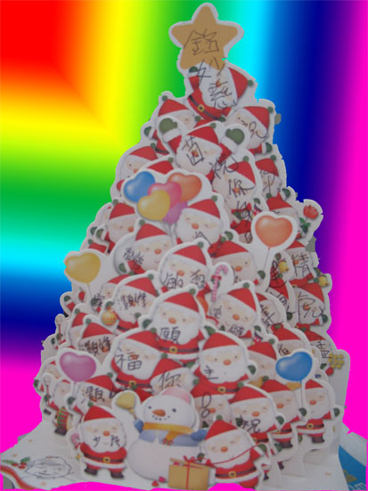

| 24.02.2010
近來天氣非常濕, 感到很厭倦, 忽然興起找以前的同事吃飯, 他們各有各有忙, 性格同以往一樣, 他們與我經歴實在太多, 彼此都很熟識。
21.02.2010
我終於出了新電話, 是Motorola 摺合機, 因舊機的電池壞了, 我看中這部機很久, Function 真是多好多, Jeffrey 都很羨慕, 幸好他沒有嚷著要一部。
20.02.2010
今天第一次到華仔家, 地方比起想像中大, 他都考慮得很妥當, 我想他很快就會有BB, 到時我們小朋友D衫褲玩具通通可比人, 間屋就小好好多嘢! 祝福他們吧!
19.02.2010
今天發生了一件我從未想過的事, 我到圖書館還書, 這個糊里糊塗的圖書管理員竟然漏入了一本, 結果我就還了書, 但圖書館就記錄我未還, 幸好我立刻借書, 及早發現, 其實當時我都問過他是否兩本, 他就不理, 我知一定是他出錯, 最後由館長替我更正。
14.02.2010
今年初一遇著又是情人節真是很特別, 新年天氣很寒冷, 很濕, 感到個市很靜, 姐姐家人又不舒服, 希望虎年平安, 人人豐衣足食, 而我在今年會有較大的changes, 我都唔知是什麼, 總之小心面對。記得上次得6度是在1999年, BB 還未出世, 當時我覺得真是很冻!
29.01.2010 佢哋有嘢講!!
27.01.2010
今日已取回 ID咭、回鄉證和提款咭, 好彩沒有失信用卡, 否則跳樓都唔踮, 比班友look 到乾, 總之聽亞媽話看緊D。
23.01.2010
在澳門碼頭, 突然話身份證不見了, 當其時我真是空白一片, Edward 他立刻定下來, 四處大聲話比人知, 希望有人幇手買票, 跟住我哋到了警局和出入境事務署, 在後者要等2-3小時, 我們便到漁人碼頭、 金沙和水立方找嘢飲, 結果找到間正常D的餐廳冷靜一吓, 當時只想立刻返香港, 我感到四周很不安全, 兩個明似外地人在夜晚條街上遊來遊去, 街上只得三兩人, 在暗處又有一班人在看住你。 直至到了船, 才鬆一口氣!!
今次過澳門真是嚇嚫大家, 包括澳門各人, 連他們都不知所措, 回想起這都不算什麼, 當人人平常在工作生活時, 我得要解決許多從未想到會出現的問題, 今次身份證不見就算了, 如果是個仔, 真是‥‥‥他就是那麼傳奇!
在今件事上我很多謝家姐、華仔和細佬陪伴我們。
20.01.2010
Nexus one 是一部由 Google 自己售賣的手機, 現在可以直接向Google 訂購, 可先到Google Checkout 登記一個帳號, 大約$4,600, 還可以刻字, iPhone 獨大的局面將打破。
18.01.2010
昨天買了部Panasonic 46G10, 比較吓, 應該好D, 看落超靓, 五年前已經想買, 不過當時很貴, 要幾萬銀, 又未成熟, 反正七叔部機壞壞地, 就新年送部舊機比他, 大家開心吓。
12.01.2010
有時我會探媽媽, 她真的有好多嘢想同人講, 在電話中跟本就講唔清, 你會明白到她的感受多一點, 其實我很喜歡聽她講故事, 就好像我孩兒想知道我們對人對事的看法一樣, 只在於她對你和你身邊的人了解幾多和環境許唔許可, 坐着聽着就成。
5.1.10
今天我到了將軍澳, 原來平日靜得很恐怖, 比起在節日到來, 氣氛和心情都真是天壤之別, 我感到有點失望, 但在這裡竟然比我換到 16號仔, 直到現在我已換了六款 Hello Kitty, 分別是 8,16,20,22,26,27, 我最想要 1 和 21, 我也打算買個架來吊起佢地。
25.12.09
今晚是平安夜, 我們
送了一張有好多聖誕老人的咭給媽媽,都幾好,旺一旺啦! Jeffrey抽了對暖笠笠拖鞋 , 在家中行來行去, 看來他真是很鍾意! 亞姐今年買了很多朱古力, so sweet! Merry Christmas!! , 在家中行來行去, 看來他真是很鍾意! 亞姐今年買了很多朱古力, so sweet! Merry Christmas!!
21.12.09
這幾天到過幾個地方看聖誕燈, 今年最有驚喜的, 應是Time Square 的大灰兎和 Habour City 的小蜜蜂, 其他都很無聊, 反而覺得 TVB 的 聖誕奇遇片很有趣呢。
6.12.09
Jeffrey 學校的獎券竟然中了獎, 是26293, 我們非常意外, 獎品是美容品, 真是好彩了。
各位好久沒有在 Blog 這裡寫嘢, 我终於成功做到自己的網頁了, 真是很開心。 之前在網上看到一幅廣告, 它後面是黑夜, 突然有一公仔圖像由上而下飄下來, 我覺得非常有趣, 所以就去學去試, 真是有可能的!!
在這裡希望將自己喜歡的事物告訴大家和記下來。
Carmen |